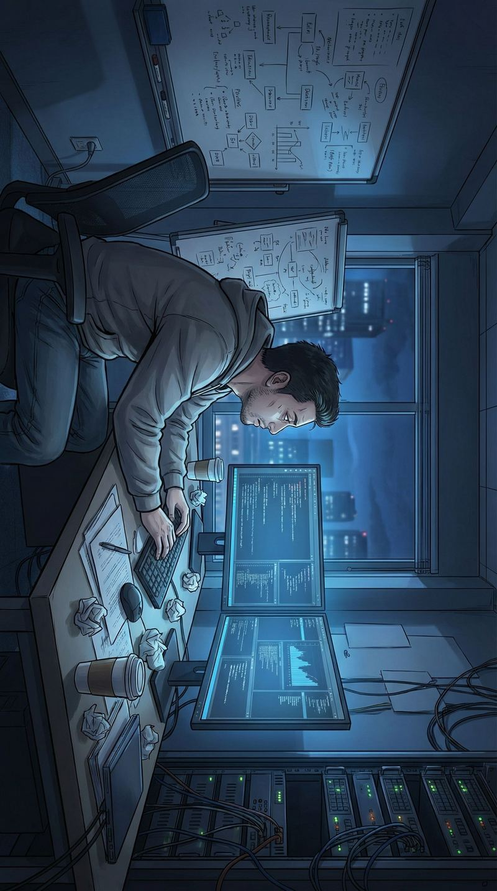
凌晨3:30。深脑科技的小办公室里只剩我一个人。
三块显示器的蓝光把我的脸映得像个鬼。六个小时了，一个该死的内存泄漏把我钉在了这张椅子上。
（内心：用户量一涨就崩，明天投资人要来看demo，如果这个bug不修好……）
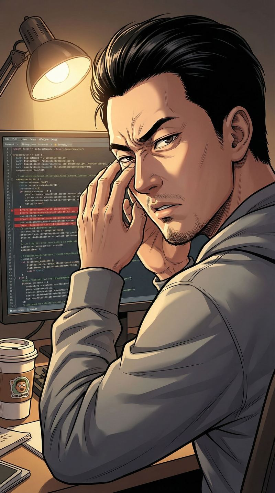
我揉着太阳穴，盯着屏幕上密密麻麻的错误日志。红色的报错信息像血管一样爬满了终端。
第七杯咖啡了。杯子上贴着小胖手写的标签——
"CEO本人手冲（代码）"
（内心：他妈的，这个笑话在凌晨三点半真的一点都不好笑。）
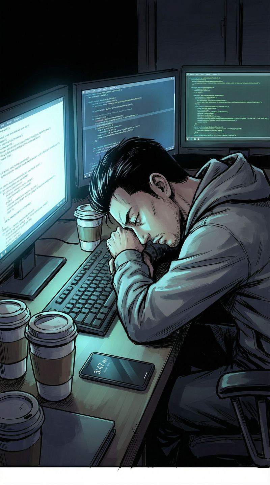
我放弃了。额头砸在键盘和咖啡杯之间的空隙里。
手机亮了一下。3:47。
（内心：就趴一分钟……一分钟就好……）
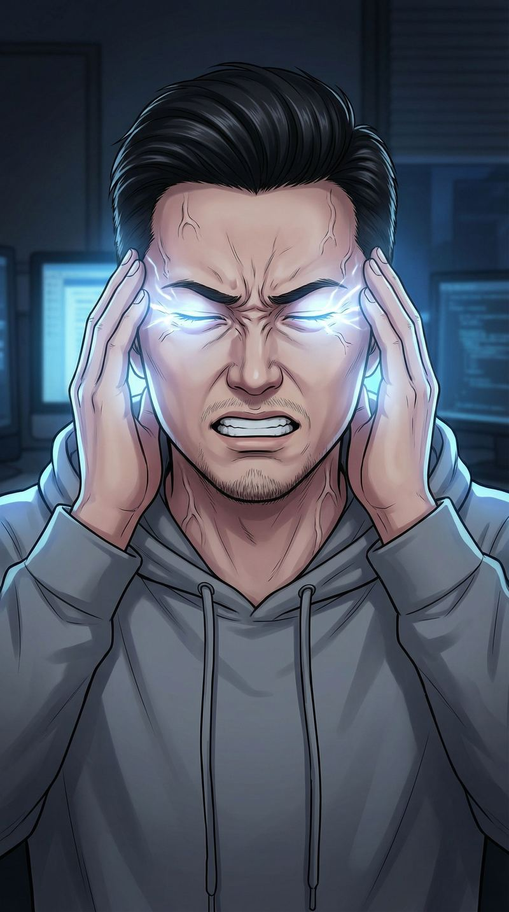
不知道过了多久。
头痛把我炸醒了。不是那种熬夜的钝痛——是像有人拿电钻在太阳穴上开洞。
我双手抱头，指甲掐进头皮里。青筋在额角突突直跳。
（内心：不对……这不是熬夜能熬出来的痛……）
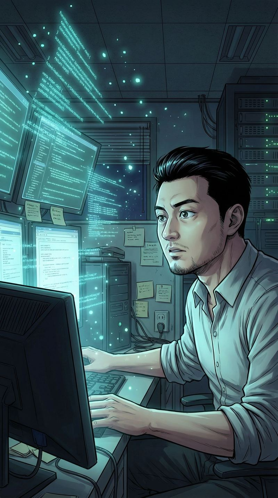
睁眼的瞬间——
世界变了。
屏幕上的代码在发光。不是背光的那种亮，是真的在——发光。每一行代码都像活了一样，从屏幕上飘出来，悬浮在空气中。
数据包变成了肉眼可见的光粒子，在办公室里像萤火虫一样流动。
（内心：……我是不是猝死了？这是天堂？程序员的天堂长这样？）
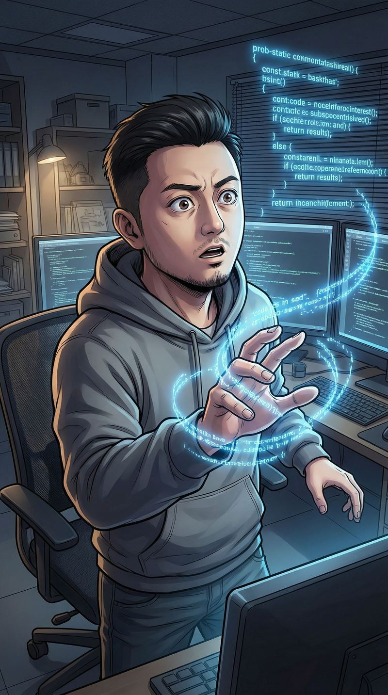
我猛地站起来，椅子往后滑了一米。
伸出右手，试探性地去"碰"一串浮在空中的代码——
它响应了。
代码像受惊的鱼群一样散开，又被我的手指吸引，缠绕在指尖，跟着我的意念流转。
（内心：这……什么鬼？！）
我的手伸进了那团发光的内存架构里。
六个小时找不到的内存泄漏——此刻就像一根漏水的管子一样清清楚楚地悬在我眼前。红色的数据流从一个裂口里汩汩往外涌。
手指轻轻一捏。裂口合上了。
（内心：……就这？？我debug了六个小时的东西，用手一捏就好了？？）
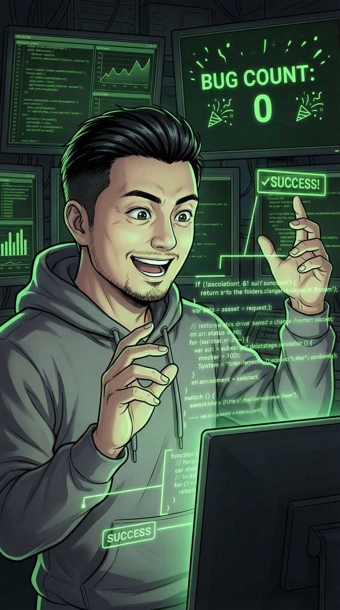
我愣了三秒，然后咧嘴笑了。
两只手在空中飞舞，像指挥交响乐一样操纵着浮动的代码。Bug计数器在身后的显示器上疯狂归零。绿色的通过标志一个接一个亮起。
修bug从来没这么爽过——这比sudo还好使！
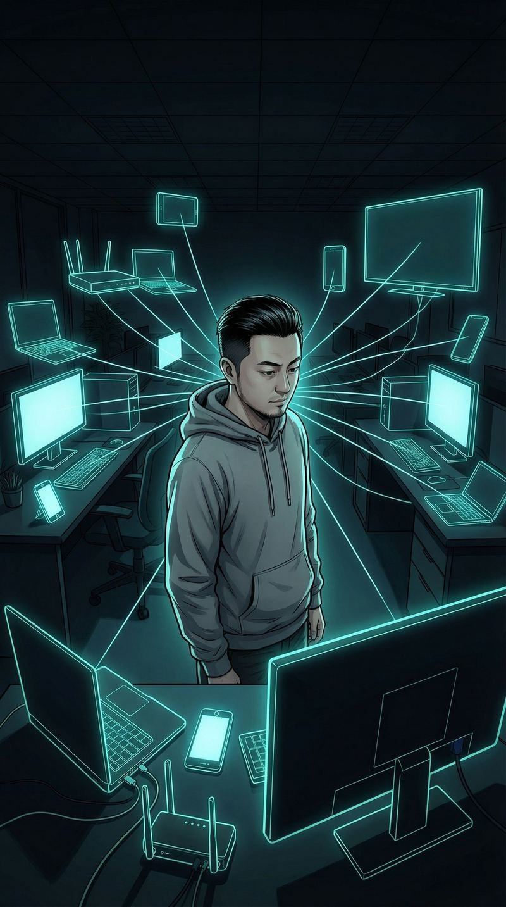
修完bug之后，我没有停下来。
因为我突然发现——我能"感知"到办公室里每一台电子设备。
路由器、笔记本、手机、智能音箱、甚至角落里那台快报废的打印机……它们在我的感知里就像一个个发光的节点，用细细的光线连成了一张网。
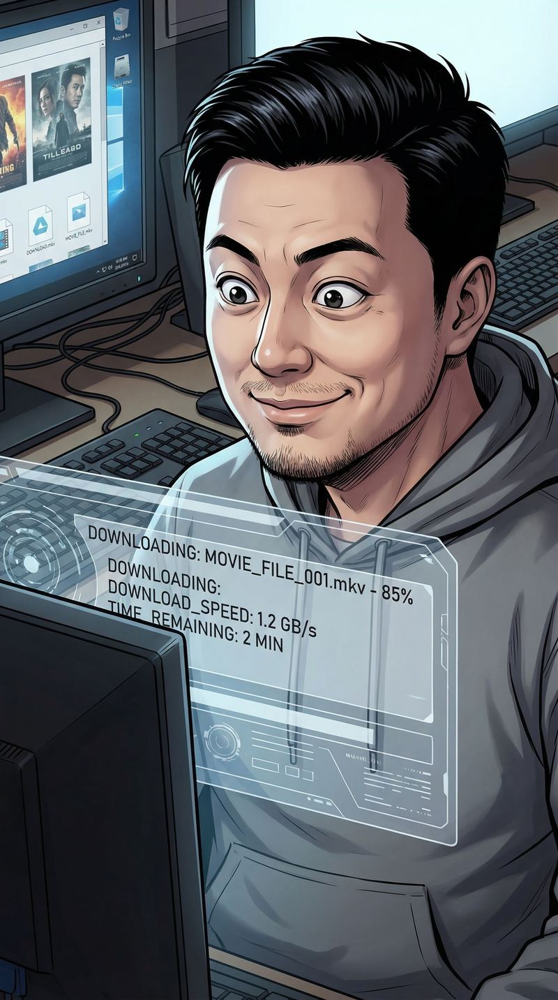
我"看"向小胖的电脑。
……这哥们的电脑正在自动下载盗版电影。四部。同时。
（内心：难怪公司网速慢。好家伙，《战狼3》都还没上映呢你就找到资源了？）
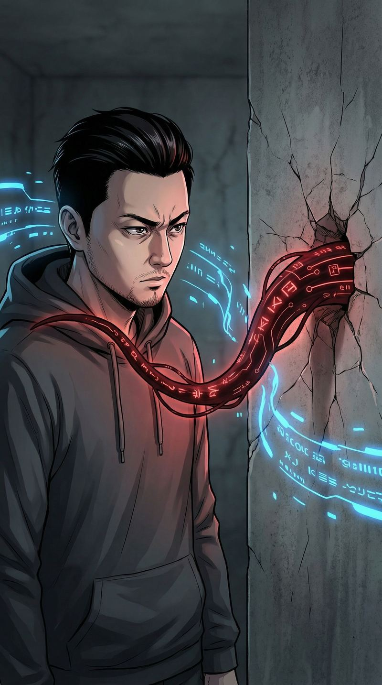
笑容僵住了。
在那张光网里，我看到了一条不该存在的连接——一条暗红色的数据流，像蛇一样从墙壁外面钻进来，正在悄悄吸取我们的代码库。
（内心：有人在偷我们的代码。现在。就在这一秒。）
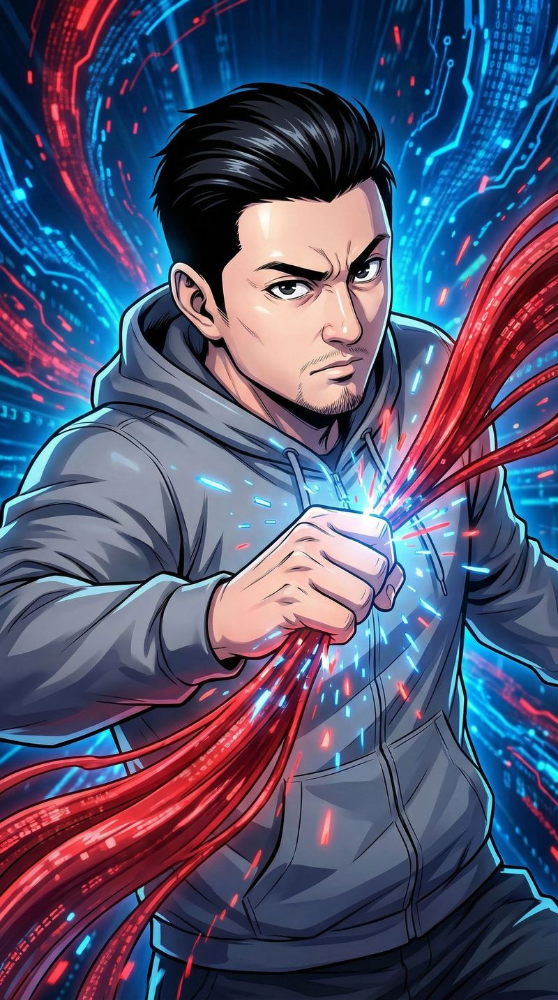
我的手像刀一样切下去。
那条暗红色的数据流在我手掌劈过的地方断裂开来，数字碎片像火花一样四溅。
连接，断了。
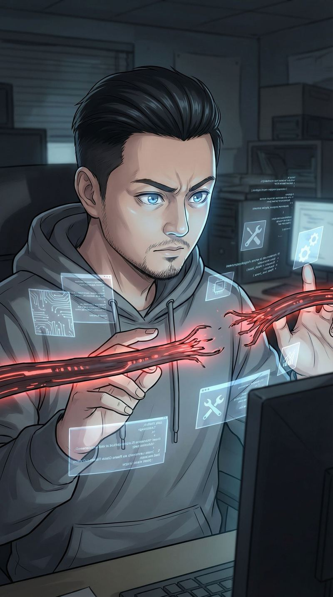
切断连接后，那条数据蛇留下了尾巴——残留的数字指纹在空气中慢慢消散。
我眯起眼睛，集中注意力"放大"那些残留痕迹。
APT级别的渗透工具。这不是普通的商业间谍。有人在幕后操盘，而且预算不低。
（内心：星图科技……是你们？）
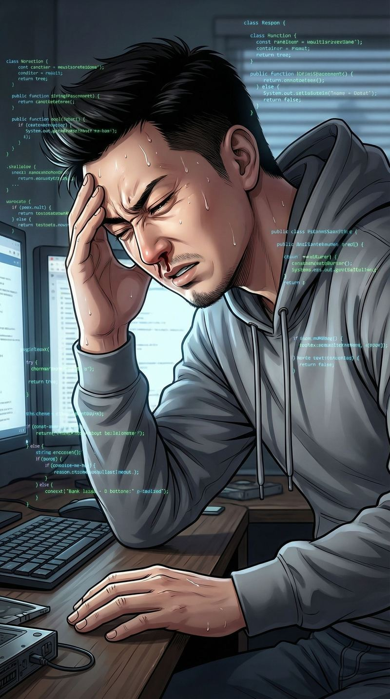
然后，副作用来了。
太阳穴像被钢针扎了一下。我一把扶住桌沿，指节发白。
头痛。剧烈的头痛。同时，一种恐怖的饥饿感从胃里涌上来——像三天没吃饭的那种。
（内心：使用这种能力……是有代价的？）
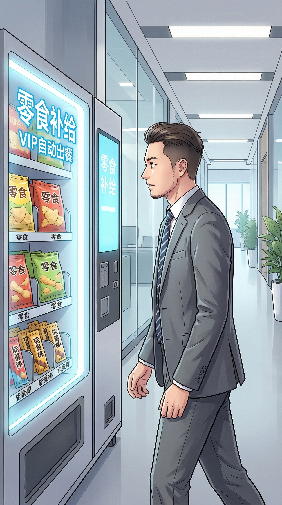
我踉踉跄跄冲到走廊尽头的自动贩卖机前，疯狂往嘴里塞面包。
四个面包。我买了四个面包。
最离谱的是——我还没掏手机付款，自动贩卖机就开始出货了。
屏幕上甚至显示了一行字："检测到VIP用户，自动出餐。"
（内心：……我什么时候成你VIP了？该不会是这个破能力的锅吧？）
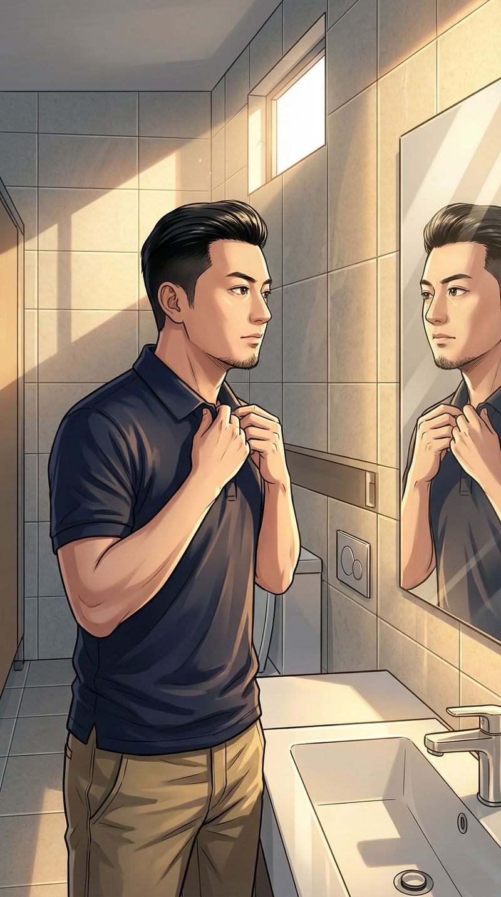
早上九点。我换了身行头。
深蓝色Polo衫，休闲裤，头发重新抿好。镜子里的我看起来像个正常的CEO，不像三小时前那个在自贩机前往嘴里塞四个面包的疯子。
（内心：好了。装人。）
周sir准时到了。
花白头发但精神得像打了鸡血。定制西装，袖口闪过一道金光——劳力士。笑容温和，但那双眼睛扫过来的时候，我后背起了一层鸡皮疙瘩。
"周sir，欢迎欢迎。"
（内心：这个人……不简单。）
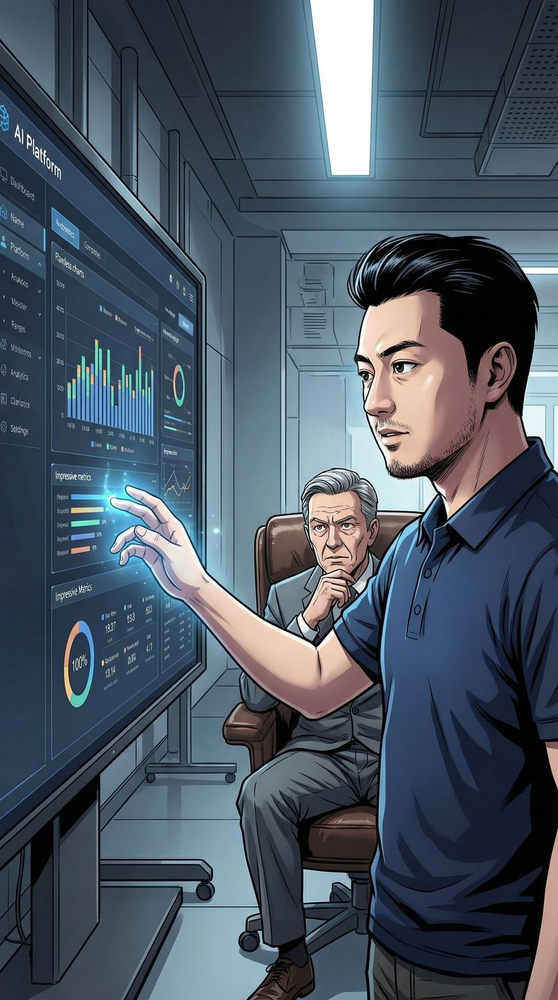
产品Demo开始。
我讲解着平台功能，手指在大屏上划动——然后我发现，我的指尖在微微发光。
平台响应速度突然变得丝滑。数据加载几乎零延迟。动画流畅得像CG。
周sir的眼睛亮了。
"小朱，这个响应速度……用的什么架构？"
（内心：呃……用的是我刚获得的超能力架构，您感兴趣吗？）
Demo结束。周sir主动伸手。
我握住他的手的瞬间——
能力失控了。
一道蓝白色的电流从接触点炸开，涌入我的感知。周sir口袋里的手机，在我脑海里变得透明——邮件、通讯录、加密文件，一股脑全涌进来。
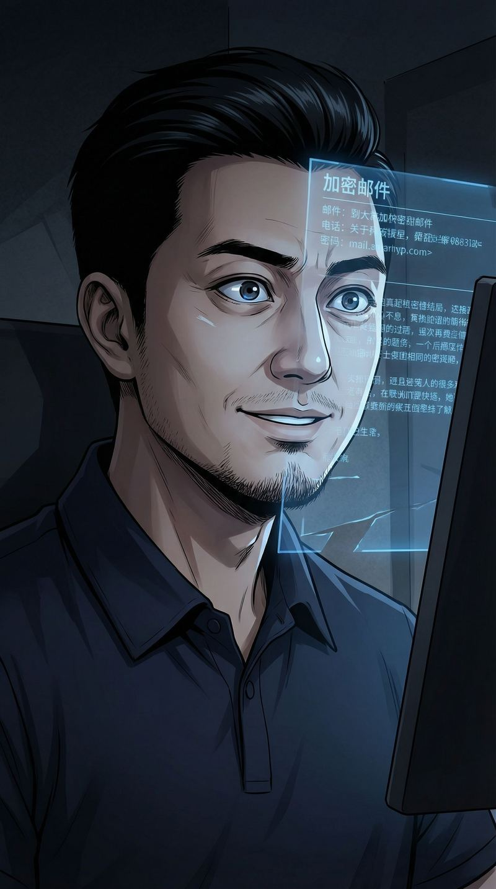
我看到了一封加密邮件。
标题——"项目觉醒·候选人名单"。
名单里有一个名字。
我的名字。
我努力维持住脸上的笑容，但手心已经湿了。
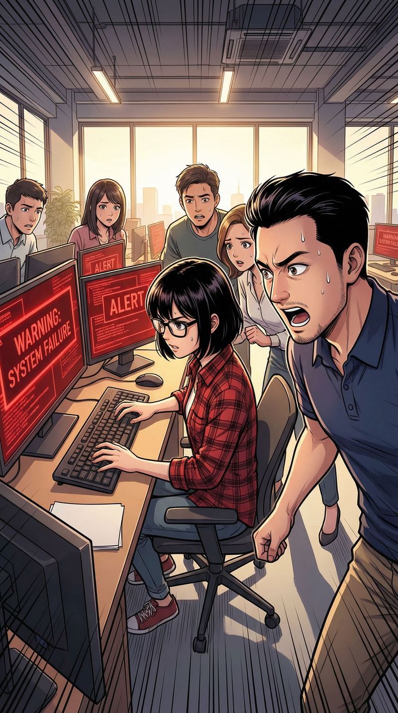
下午两点。周sir刚走没多久。
所有显示器同时亮起红色警报。
苏晴的声音从工位那边传来："DDoS！大规模的！带宽已经打满了！"
我从会议室冲出来。办公室里所有人都围到了苏晴的工位旁。
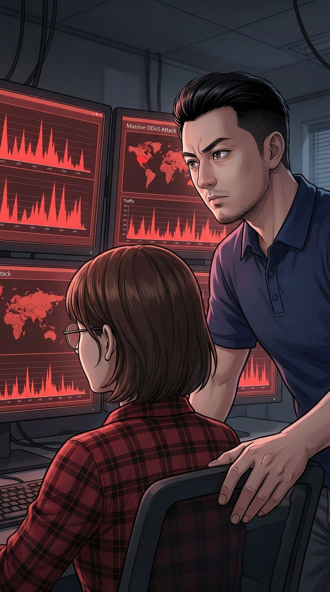
苏晴的监控面板上，攻击流量的曲线像心电图一样疯狂跳动。但不是随机的——每一波攻击都精准地打在我们最脆弱的节点上。
苏晴头也不抬："他们知道我们的架构。"
（内心：当然知道。因为他们偷了我们的代码。凌晨那条红蛇……）
我坐到一台空工位前，装模作样地敲键盘。
但实际上——我的意识已经离开了这个房间。
蓝色的能量从太阳穴向外扩散。在同事们看不见的维度里，我直接接入了公司的网络基础设施。
（内心：苏晴处理物理层面。我来处理她看不到的那一层。）
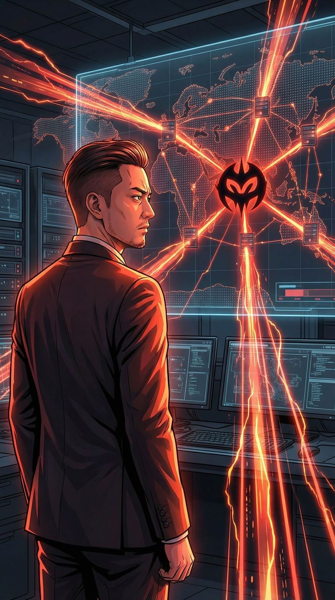
在数字世界里，攻击的全貌展开在我面前——
至少五路攻击流量，从不同的节点汇聚而来，像五条红色的河流同时冲向同一个目标。而在河流的源头，一个暗红色的标识隐约浮现。
星图科技。
（内心：五路协同攻击。不是自动化脚本能做到的。有人在实时指挥。）
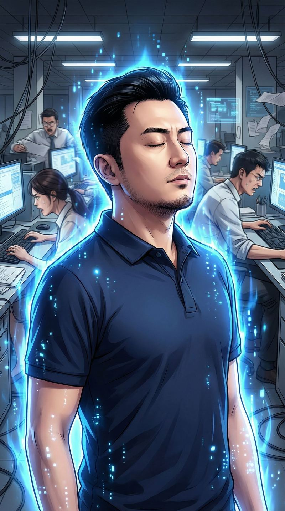
我闭上眼，做了一个深呼吸。
蓝色的能量在身体里聚集。周围的空气开始轻微震颤。同事们在身后焦头烂额地打电话、敲键盘，没人注意到我工位上的咖啡杯在轻轻晃动。
（内心：好了。是时候认真一次了。）
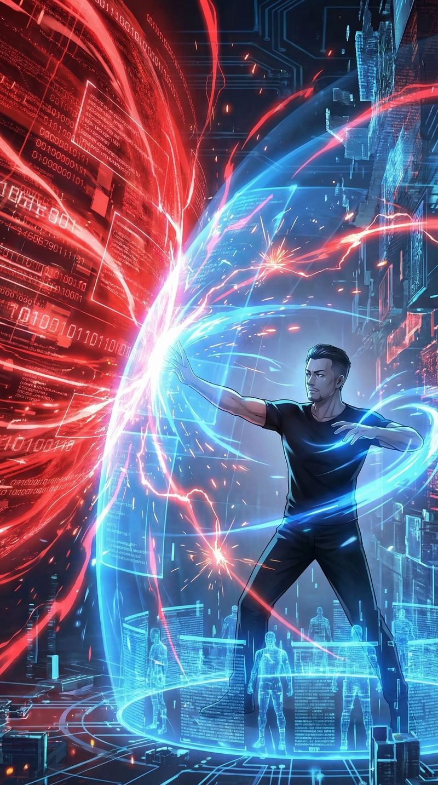
数字战场上，红色洪流铺天盖地地涌来。
我张开双臂。蓝色的防御光盾在我身前凝聚，一层、两层、三层——像大坝一样挡在洪水面前。
红色撞上蓝色。炸裂的数据碎片在虚拟空间里像烟花一样四散。
我的鼻子在现实世界里开始滴血。但我不管了。
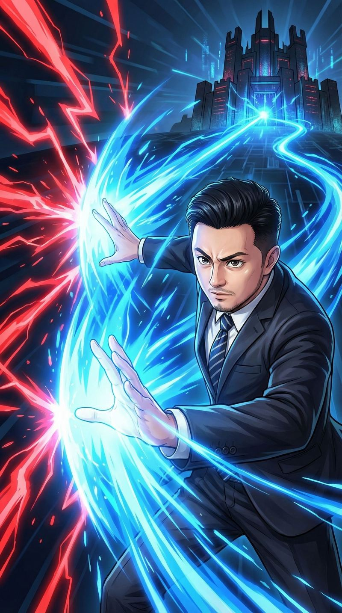
防住了。然后，反击。
蓝色的能量顺着红色攻击流的路径反向追溯——像逆流而上的电流，一路追踪到攻击者的服务器。
星图科技的内部服务器。在我的感知里像一座暗红色的堡垒。
我的蓝色能量穿透了它的防火墙，像推开一扇纸糊的门。
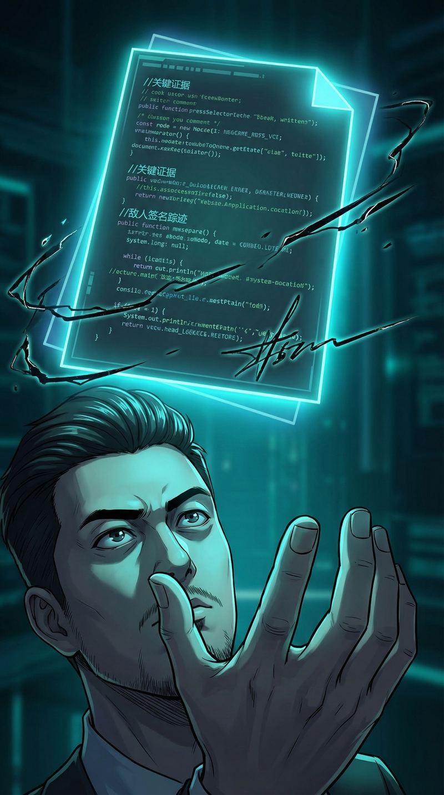
在敌人的服务器里，我找到了一份文件。
星图科技明天要给投资人演示的demo。核心代码——一字不改——是从我们这里偷的。
最绝的是代码注释。
注释写着："这段从深脑抄的，别让老板知道。"
（内心：……谢谢自首。截图了。）
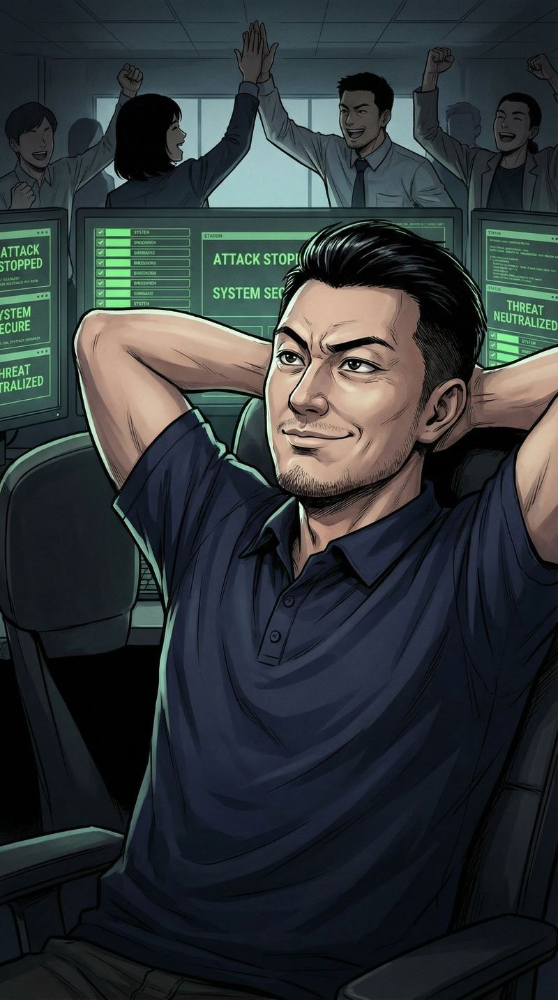
我靠在椅背上，嘴角微微上扬。
屏幕上的攻击警报消失了。绿色的状态指示灯一个接一个亮起。身后的同事们发出一阵欢呼。
小胖从远处冲过来："晴姐牛逼！挡住了！"
苏晴推了推眼镜："……我也不知道怎么突然就好了。"
（内心：姐，因为你有个开挂的CEO。）
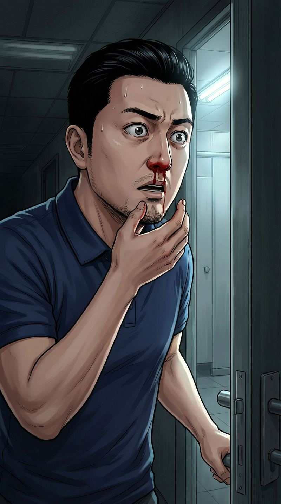
趁没人注意，我冲进洗手间。
鼻血滴在白色洗手台上。红色刺眼。
头痛比凌晨那次更严重。视线模糊了一瞬。
（内心：代价……每次用这个能力，身体都在承受代价。长期下去……）
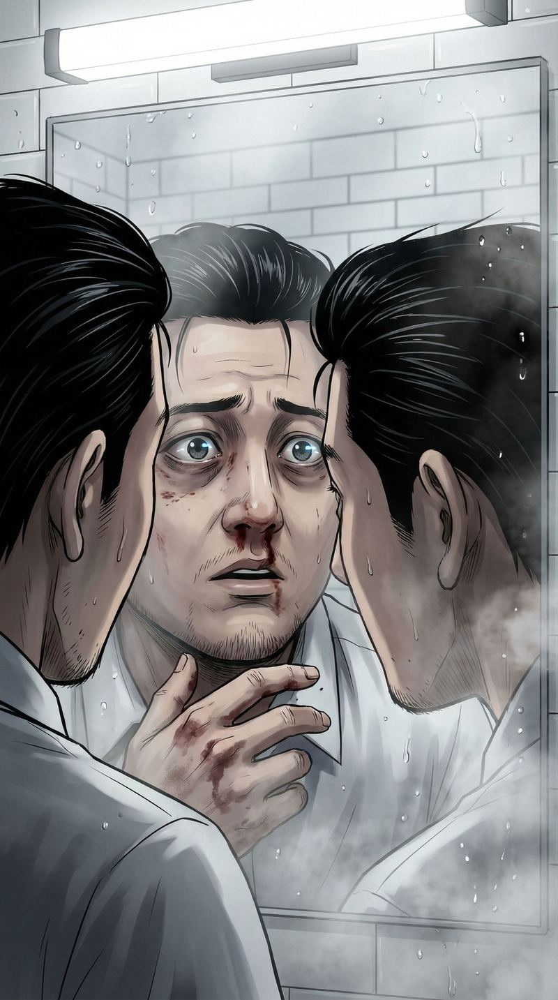
我擦掉鼻血，抬头看向镜子。
镜子里的那个我，看起来疲惫但完整。一切正常——
除了瞳孔。
在我的瞳孔深处，有微弱的蓝色光芒在闪烁。像两颗极小的LED灯。
不是错觉。不是反光。
是从我眼球内部发出的光。
（内心：……我变成了什么？）
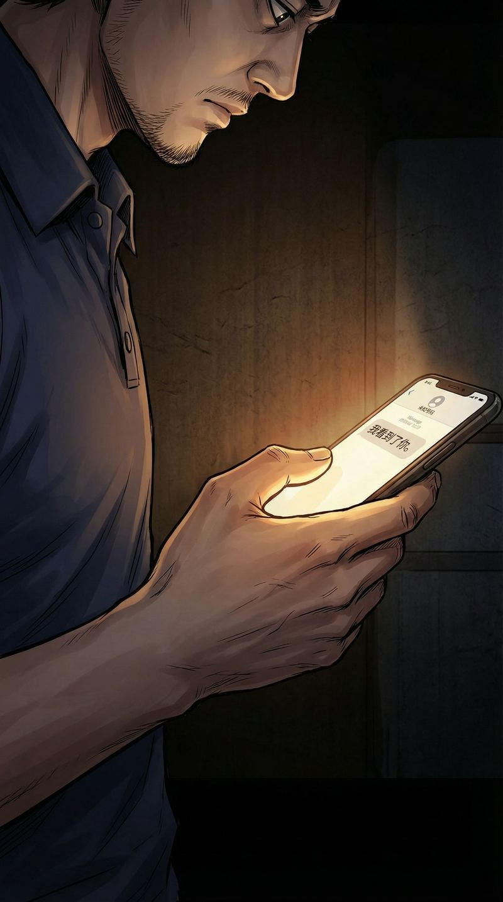
就在这时，口袋里的手机震了一下。
一条短信。未知号码。
"你不是唯一一个觉醒的人。
明天下午三点，老地方见。
——另一个debug过世界的人"
老地方。
我从没和任何人约过"老地方"。
我的拇指悬在屏幕上方，迟迟没有按下。
谁发的短信？
"老地方"是哪里——我从没和任何人约过"老地方"。
"另一个debug过世界的人"——还有其他觉醒者？
周sir手机里的"项目觉醒·候选人名单"
和这条短信有关系吗？